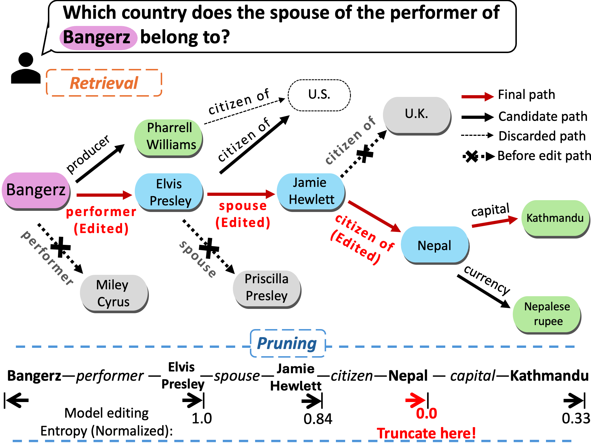
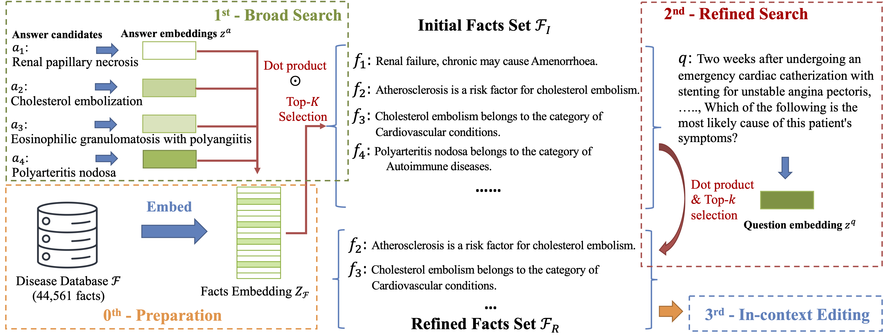
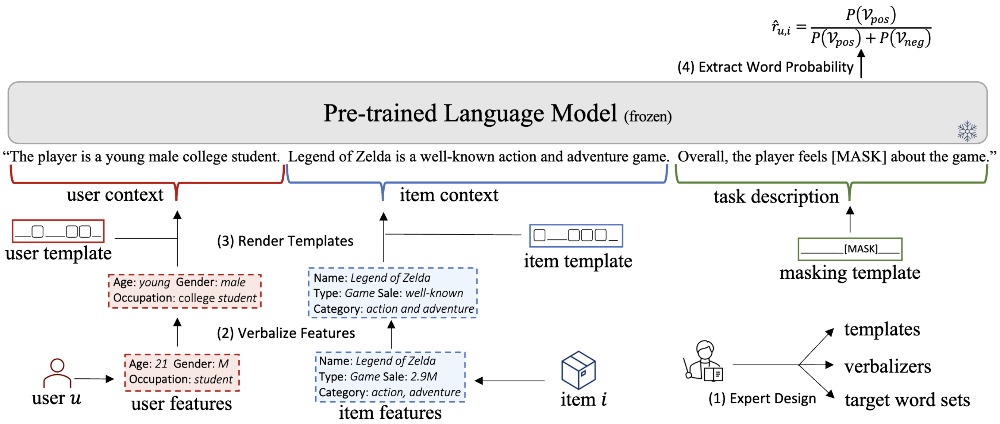
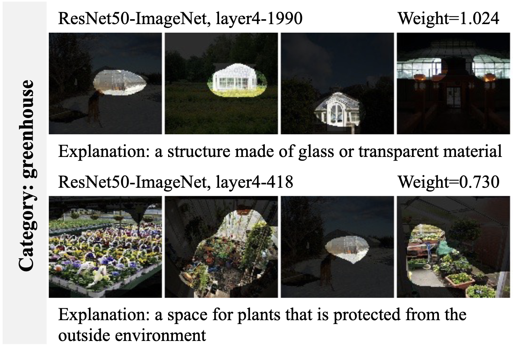
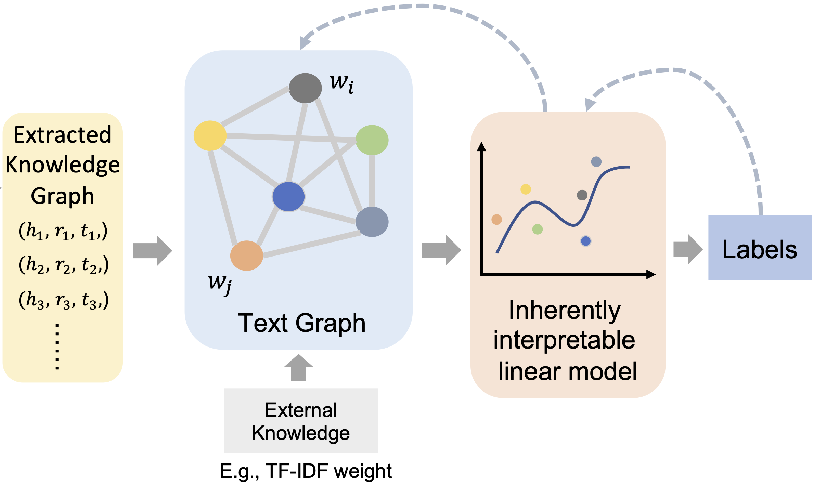
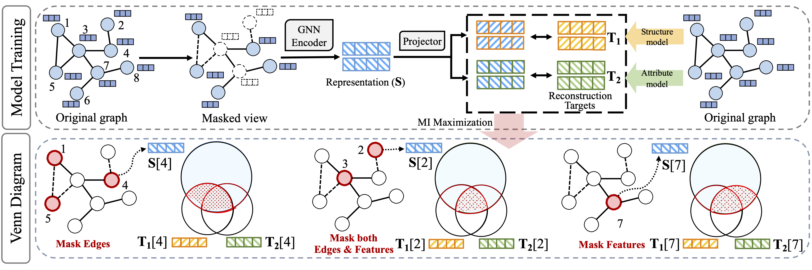
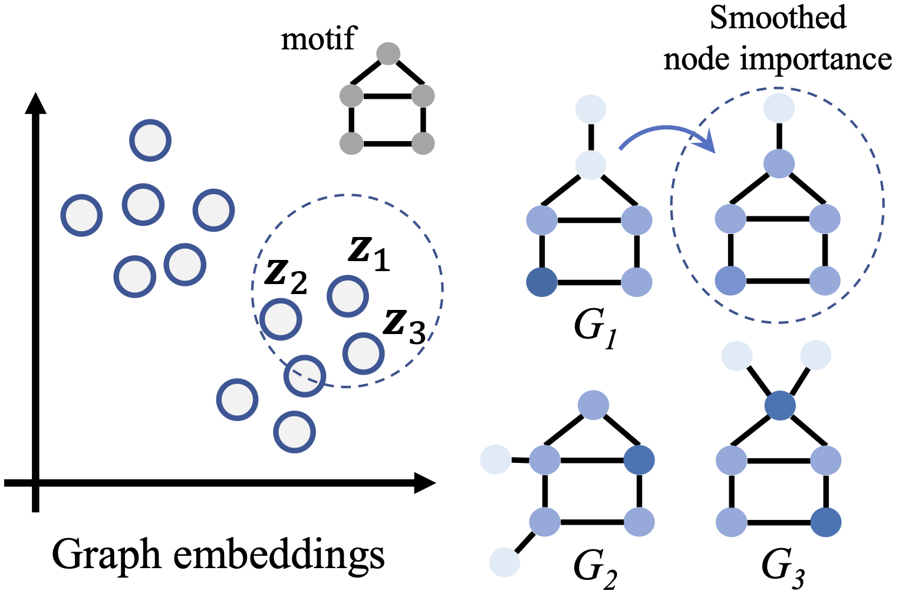
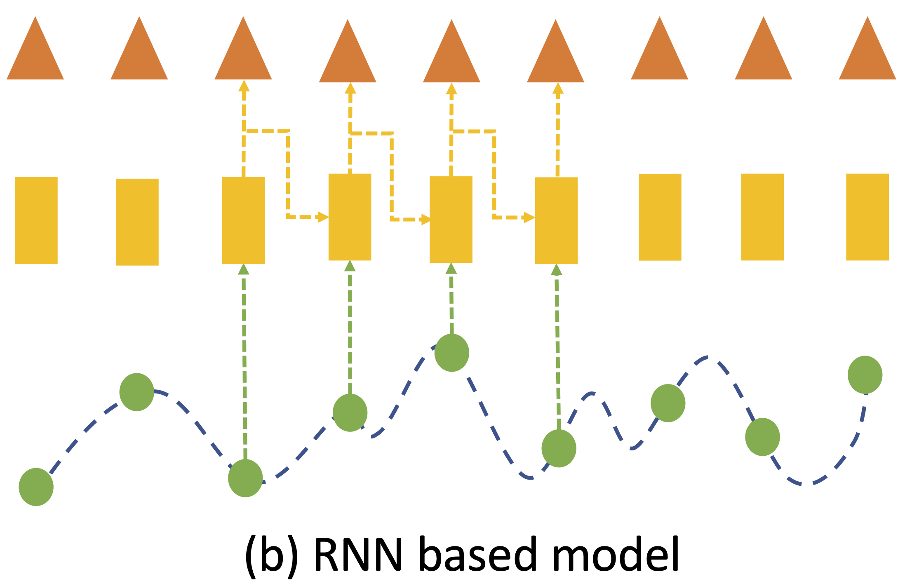

|
I am a third-year Ph.D. student at the University of Georgia, under the mentorship of Prof. Ninghao Liu. My research is centered around the exciting fields of Responsible AI, with a primary goal to craft interpretable deep learning models that produce reliable and verified outputs. My specific areas of research include:
Email / Linkedin / Google Scholar / Github / CV. |
{kind=link}
News
| 2024/07 - One paper accepted by CIKM 2024. |
| 2024/06 - One paper accepted by AMIA 2024. |
| 2024/06 - Give one tutorial about XAI and its medical application on ICHI 2024. |
| 2024/05 - Starting my remote internship at Harvard Medical School, advised by Dr. Xiang Li. |
| 2024/01 - One paper accepted by TheWenConf 2024. |
| 2023/09 - One paper accepted by NeurIPS 2023. |
| 2022/01 - I joined the DLGA lab at the University of Georgia as a research assistant. |
Selected Publications
|  |
(CIKM), ACM International Conference on Information and Knowledge Management, 2024. [arXiv] |
|  |
(AMIA), American Medical Informatics Association Annual Symposium, 2024. [arXiv] |
|  |
(WWW), The Web Conference, 2024. [arXiv] |
|  |
(AAAI Student Program), AAAI-24 Student Program, 2024. [arXiv] |
|  |
(ICDMW), International Workshop on Learning with Knowledge Graphs @ ICDM2023, 2023. [arXiv] [code] |

|
(NeurIPS), Thirty-seventh Conference on Neural Information Processing Systems, 2023. [arXiv] [code] |
|  |
(CIKM), ACM International Conference on Information and Knowledge Management, 2023. [arXiv] [code] |
|  |
(ECML-PKDD), European Conference on Machine Learning and Principles and Practice of Knowledge Discovery in Databases, 2023. [arXiv] [code] |
Preprints
|  |
(Preprints) [arXiv] [code] |
|
(Preprints) [arXiv] |
Teaching
| Teaching Assistant of CSCI4380/6380 Data Mining (Two Sessions), University of Georgia, Fall 2023 |
| Teaching Assistant of CSCI4380/6380 Data Mining, University of Georgia, Spring 2023 |
| Teaching Assistant of CSCI4360/6360 Data Science, University of Georgia, Fall 2022 |